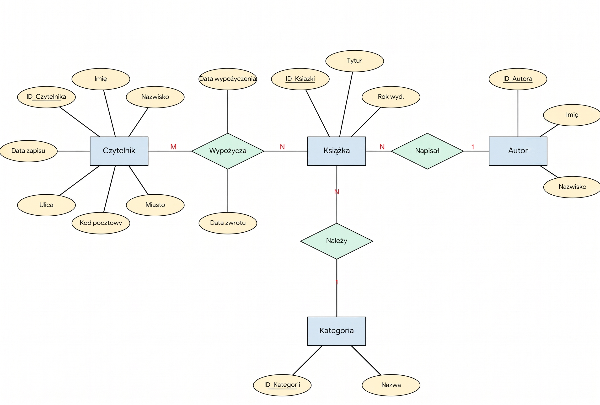
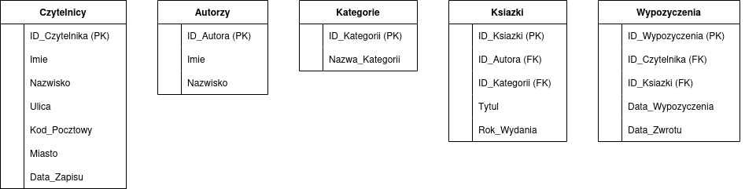
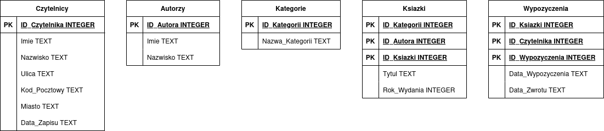
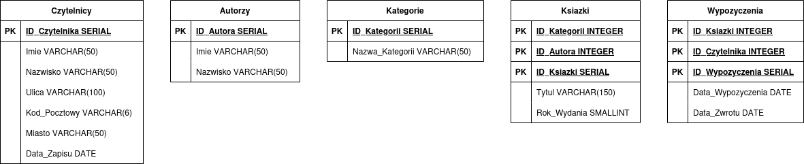

3. Rozdział 3: Projektowanie Bazy Danych: System Zarządzania Biblioteką¶
- Autorzy:
Paweł Łoćwin
Paweł Łosowski
3.1. Wybór zagadnienia, opis procesów i danych¶
3.1.1. Wybrane zagadnienie:¶
System zarządzania wypożyczeniami w bibliotece. Projekt obejmuje obsługę bazy czytelników, katalogu zbiorów bibliotecznych (z uwzględnieniem autorów i kategorii literackich), a także pełen proces ewidencji wypożyczeń, zwrotów oraz historii operacji każdego użytkownika.
3.1.2. Opis procesów i więzy integralności:¶
Głównym procesem w systemie jest obieg książki między biblioteką a czytelnikiem.
Rejestracja: Czytelnik zapisuje się do biblioteki, podając swoje dane osobowe oraz adresowe. System automatycznie rejestruje datę zapisu.
Katalogowanie: Książki są kategoryzowane (np. Fantastyka, Kryminał, Literatura faktu) i przypisane do konkretnych autorów. Każdy fizyczny egzemplarz książki posiada swój unikalny identyfikator, co umożliwia śledzenie niezależnie każdego egzemplarza.
Wypożyczenia i Zwroty: Proces wypożyczenia łączy czytelnika z konkretnym egzemplarzem książki w czasie. Rejestrowana jest data wypożyczenia. System zakłada konieczność ewidencji dokładnej daty zwrotu rzeczywistego, co pozwala na analizy przeterminowanych wypożyczeń i wzorców korzystania z kolekcji.
Statystyki (Więzy integralności): Pola takie jak “aktualne wypożyczenia” i “suma wypożyczeń” z pierwotnego prototypu są wartościami wyliczalnymi (pochodnymi) na podstawie historii transakcji i są usuwane ze schematu normalnego.
3.1.3. Wykaz gromadzonych danych:¶
Dane czytelnika: Imię, Nazwisko, Ulica, Kod pocztowy, Miasto, Data zapisu.
Dane książki: Tytuł, Rok wydania, Dostępność.
Dane autora: Imię, Nazwisko.
Dane kategorii: Nazwa gatunku literackiego.
Dane transakcyjne: Data wypożyczenia, Data zwrotu (rzeczywista).
3.2. Prototyp CSV¶
Aby zweryfikować kompletność przetwarzanych informacji, przygotowano “płaską” (nieznormalizowaną) reprezentację danych dla operacji wypożyczenia, bazującą na pierwotnych wytycznych.
Imie,Nazwisko,Ulica,Kod_Pocztowy,Miasto,Data_Zapisu,Tytul_Ksiazki,Imie_Autora,Nazwisko_Autora,Kategoria,Data_Wypozyczenia,Data_Zwrotu
Jan,Kowalski,Kwiatowa 1,00-001,Warszawa,2024-01-15,Wiedźmin,Andrzej,Sapkowski,Fantastyka,2024-03-01,2024-03-15
Jan,Kowalski,Kwiatowa 1,00-001,Warszawa,2024-01-15,Pan Tadeusz,Adam,Mickiewicz,Poezja,2024-03-10,
Anna,Nowak,Polna 2,31-444,Kraków,2023-11-05,Lśnienie,Stephen,King,Horror,2024-02-20,2024-03-05
3.3. Model Konceptualny (Pojęciowy)¶
Na podstawie analizy procesów i zebranych danych opracowano model pojęciowy, identyfikując obiekty, ich cechy oraz powiązania.
3.3.1. Zidentyfikowane encje¶
Czytelnik - osoba zapisana do biblioteki.
Autor - twórca dzieła literackiego.
Książka - oferowana pozycja z inwentarza biblioteki.
Kategoria - sekcja grupująca gatunkowo księgozbiór.
Wypożyczenie - zdarzenie potwierdzające fakt wydania książki czytelnikowi.
3.3.2. Zdefiniowane atrybuty/własności¶
Czytelnik: Imię, Nazwisko, Ulica, Kod pocztowy, Miasto, Data zapisu.
Autor: Imię, Nazwisko.
Książka: Tytuł, Rok wydania.
Kategoria: Nazwa kategorii.
Wypożyczenie: Data wypożyczenia, Data zwrotu.
3.3.3. Opis związków¶
Autor – Książka (1:N): Jeden autor może napisać wiele książek. (Dla uproszczenia modelu zakładamy głównego autora).
Kategoria – Książka (1:N): Kategoria zawiera wiele tytułów.
Czytelnik – Wypożyczenie (1:N): Czytelnik może dokonać wielu wypożyczeń w historii.
Książka – Wypożyczenie (1:N): Jeden egzemplarz książki może być w swojej historii wypożyczany wielokrotnie różnym czytelnikom.
3.3.4. Identyfikacja encji słabych¶
Występuje relacja wiele-do-wielu (M:N) między Czytelnikiem a Książką (czytelnik czyta wiele książek, książka jest czytana przez wielu czytelników). Związek ten rozwiązywany jest przez encję asocjacyjną Wypożyczenia, która przechowuje wszystkie historyczne i bieżące transakcje między dwoma stronami. * Uzasadnienie: Byt ten nie istnieje samodzielnie w oderwaniu od konkretnego Czytelnika i konkretnej Książki.
3.3.5. Schemat w notacji Chena¶
{kind=link}

3.4. Model logiczny i proces normalizacji¶
3.4.1. Przebieg procesu normalizacji¶
Krok 1: Pierwsza Postać Normalna (1NF) Wiersze są unikalne, tworzymy sztuczne klucze główne (ID_Wypozyczenia). Wartości w komórkach są atomowe. Pojawia się duża redundancja danych adresowych i książkowych.
Krok 2: Druga Postać Normalna (2NF)
Rozbijamy płaską strukturę względem częściowych zależności. Oddzielamy encje twarde od operacji.
Tworzymy bazowe tabele: Czytelnicy oraz Ksiazki. Powstaje tabela Wypozyczenia przechowująca klucze obce ID_Czytelnika oraz ID_Ksiazki, a także daty transakcji.
Uwaga: Dynamiczne atrybuty takie jak “suma wypożyczeń” z pierwotnego zadania są usuwane ze schematu, ponieważ łamią zasady normalizacji – można je obliczyć zapytaniem SQL typu COUNT(*) na zdarzeniach w tabeli Wypozyczenia.
Krok 3: Trzecia Postać Normalna (3NF)
Eliminacja zależności przechodnich. Z tabeli Ksiazki wydzielamy powtarzające się nazwy gatunków do tabeli Kategorie (klucz: ID_Kategorii) oraz dane twórców do tabeli Autorzy (klucz: ID_Autora). Każda tabela reprezentuje teraz niezależną encję o jasno określonym celu biznesowym.
3.4.2. Ostateczna struktura tabel (3NF)¶
Czytelnicy: ID_Czytelnika (PK), Imie, Nazwisko, Ulica, Kod_Pocztowy, Miasto, Data_Zapisu
Autorzy: ID_Autora (PK), Imie, Nazwisko
Kategorie: ID_Kategorii (PK), Nazwa_Kategorii
Ksiazki: ID_Ksiazki (PK), ID_Autora (FK), ID_Kategorii (FK), Tytul, Rok_Wydania
Wypozyczenia: ID_Wypozyczenia (PK), ID_Czytelnika (FK), ID_Ksiazki (FK), Data_Wypozyczenia, Data_Zwrotu
3.4.3. Diagram ERD (Model Logiczny)¶
{kind=link}

3.5. Model fizyczny bazy danych¶
Różnice implementacyjne między modelami fizycznymi wynikają wprost z silników RDBMS – ograniczeń typowania SQLite oraz bogatych możliwości deklaratywnych PostgreSQL.
3.5.1. Model fizyczny dla środowiska SQLite¶
Z uwagi na okrojony zestaw typów, daty są mapowane jako TEXT.
Czytelnicy: ID_Czytelnika : INTEGER PRIMARY KEY, Imie : TEXT, Nazwisko : TEXT, Ulica : TEXT, Kod_Pocztowy : TEXT, Miasto : TEXT, Data_Zapisu : TEXT
Autorzy: ID_Autora : INTEGER PRIMARY KEY, Imie : TEXT, Nazwisko : TEXT
Kategorie: ID_Kategorii : INTEGER PRIMARY KEY, Nazwa_Kategorii : TEXT
Ksiazki: ID_Ksiazki : INTEGER PRIMARY KEY, ID_Autora : INTEGER, ID_Kategorii : INTEGER, Tytul : TEXT, Rok_Wydania : INTEGER
Wypozyczenia: ID_Wypozyczenia : INTEGER PRIMARY KEY, ID_Czytelnika : INTEGER, ID_Ksiazki : INTEGER, Data_Wypozyczenia : TEXT, Data_Zwrotu : TEXT
{kind=link}

3.5.2. Model fizyczny dla środowiska PostgreSQL¶
PostgreSQL umożliwia zastosowanie precyzyjnych i natywnych typów, w tym rygorystycznych typów daty (DATE) oraz optymalizacji pamięciowej dla ciągów znaków (VARCHAR).
Czytelnicy: ID_Czytelnika : SERIAL PRIMARY KEY, Imie : VARCHAR(50), Nazwisko : VARCHAR(50), Ulica : VARCHAR(100), Kod_Pocztowy : VARCHAR(6), Miasto : VARCHAR(50), Data_Zapisu : DATE DEFAULT CURRENT_DATE
Autorzy: ID_Autora : SERIAL PRIMARY KEY, Imie : VARCHAR(50), Nazwisko : VARCHAR(50)
Kategorie: ID_Kategorii : SERIAL PRIMARY KEY, Nazwa_Kategorii : VARCHAR(50)
Ksiazki: ID_Ksiazki : SERIAL PRIMARY KEY, ID_Autora : INTEGER REFERENCES Autorzy, ID_Kategorii : INTEGER REFERENCES Kategorie, Tytul : VARCHAR(150), Rok_Wydania : SMALLINT
Wypozyczenia: ID_Wypozyczenia : SERIAL PRIMARY KEY, ID_Czytelnika : INTEGER REFERENCES Czytelnicy, ID_Ksiazki : INTEGER REFERENCES Ksiazki, Data_Wypozyczenia : DATE DEFAULT CURRENT_DATE, Data_Zwrotu : DATE
{kind=link}
